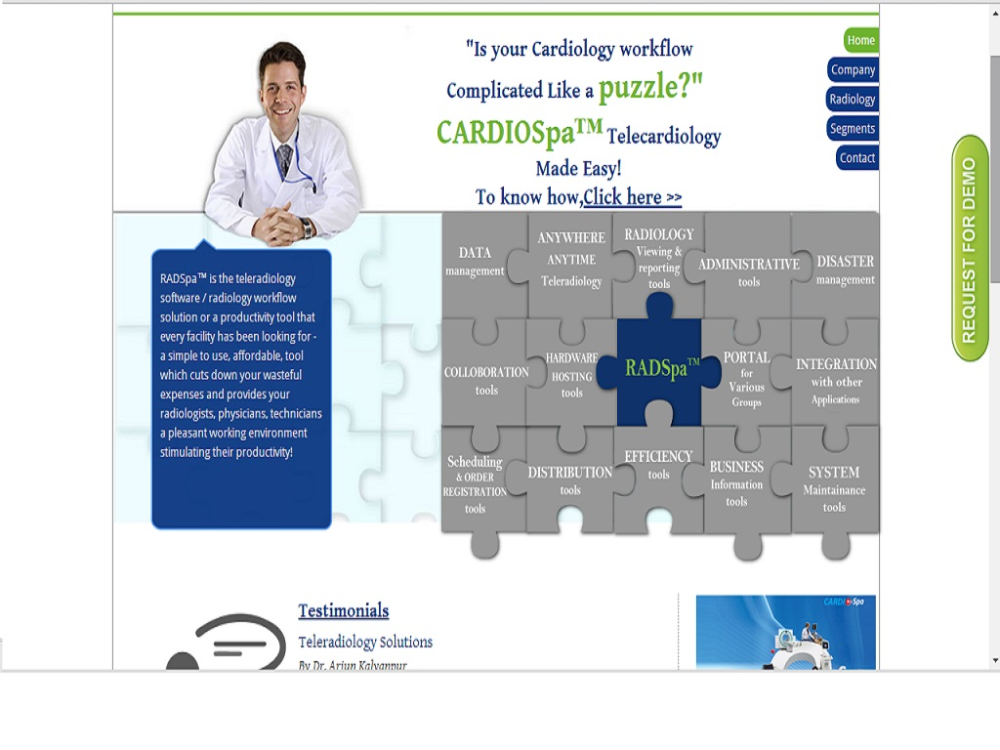

Design and Development
-
Solar System using css3
Solar System is an ongoing project showcasing the solar system using CSS3.
-
Travel Website Template
A bootstrap project for creating a travel website template. This is still under construction.
-

Website design and development
Telradtech website was created to showcase the product- RADSpa and generate inquires.
Digital Marketing
-

Teleradiology Solutions
I optimized content, keywords and landing pages for lead generation. Actively reporting and problem solving on issues and pro-actively maintaining the websites were the core responsibilities.
-
Telerad Tech
I optimized content, keywords and landing pages for lead generation. Actively reporting and problem solving on issues and pro-actively maintaining the websites were the core responsibilities.